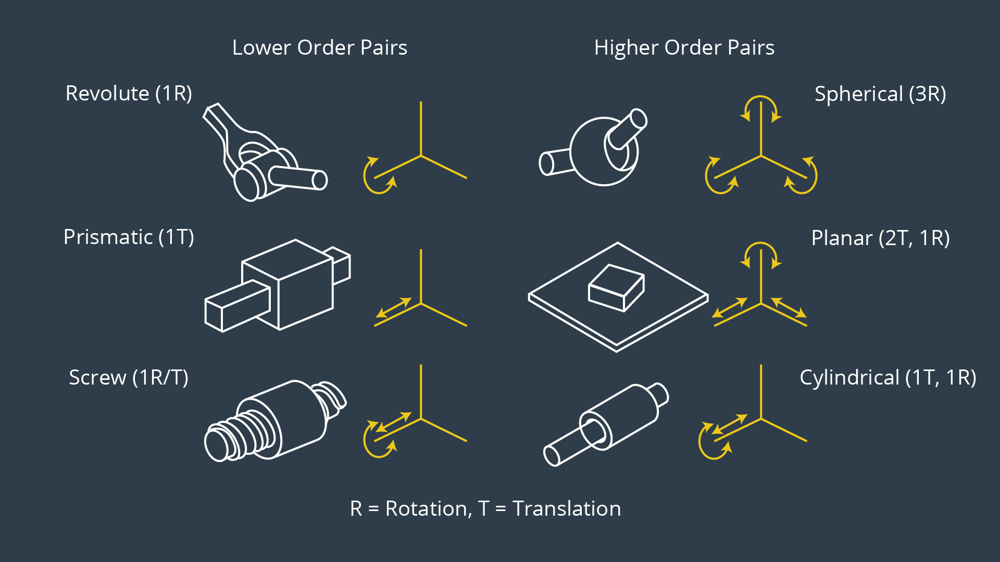

Joints Type

Udacity's Robotic Software Engineering
Normally we have Z axis pointing upward in kinematic problems.
But in ThreeJS Y is the default up axis, we can achieve Z as up axis by setting camera up axis to Z, but
orbital control will not work as expected. so for now we have replaced the Y with Z.
X=\begin{bmatrix} M_1 \\ \vdots \\ M_n \end{bmatrix}
DH Table
| Joint i |
θi (deg) |
αi (deg) |
ri (cm) |
di (cm) |
| 1 |
0 |
0 |
0 |
0 |
| 2 |
0 |
0 |
0 |
0 |
| 3 |
0 |
0 |
0 |
0 |
Reference:
How to find Denavit Hartenberg Parameter Tables
DH Params for calculation of kinematics & dynamics
What are DH parameters